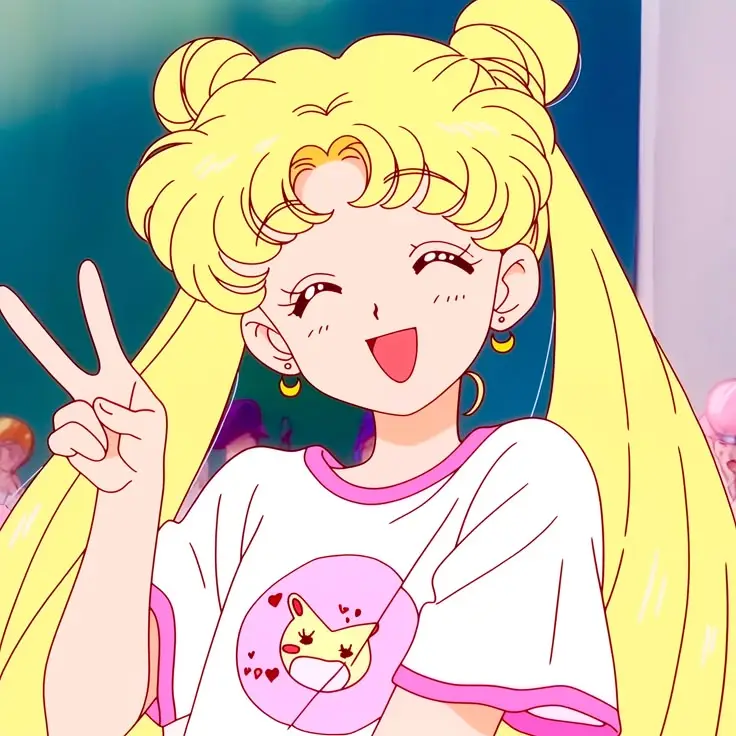

"AntiRain no es solo un equipo, es una revolución en la creación de proyectos. Desde las sombras, observamos, corregimos y construímos con precisión. No seguimos tendencias, las redefinimos. Con paciencia y visión, esperamos el momento adecuado para actuar. Moon Center es solo el comienzo... lo que vendrá después cambiará el juego. Todo bajo una única señal: el deber. ¿Estás listo para la tormenta?"
Ser parte de AntiRain no es solo unirse a un equipo, es formar parte de una red de innovación y crecimiento. La comunidad se beneficiará de:
• Calidad y precisión: Cada proyecto será trabajado con meticulosidad, asegurando que el contenido sea claro, atractivo y funcional.
• Expansión de oportunidades: se abrirán puertas para colaborar en diferentes áreas, desde el desarrollo web, hasta la creación de contenido.
• Innovación constante: AntiRain no solo sigue las tendencias, las redefine, ofreciendo siempre algo nuevo y diferente.
• Soporte y mejora continua: Los errores no son fallas, son oportunidades de crecimiento. Todo se corrige, se perfecciona y se eleva a otro nivel.
El mundo digital está saturado de proyectos que nacen rápido y desaparecen aún más rápido. AntiRain es la resistencia contra la fugacidad, la prueba de que con paciencia y dedicación se pueden construir cimientos sólidos.
No se trata de correr para ser el primero, sino de avanzar con precisión para ser el mejor. Recuerda que esta comunidad, aún en desarrollo, es la prueba de resistencia y determinación para dar ejemplo a infinidad de proyectos.
Quienes entiendan esto no temen a la espera, porque saben que cuando llega el momento, la tormenta de AntiRain no deja nada igual.
Palabras de Walterex: "En lo personal, veo en AntiRain una promesa fascinante de innovación y transformación. La idea de esperar pacientemente el momento indicado para actuar, en lugar de precipitarse, me sugiere que cada paso está meticulosamente planeado y que mi visión es el faro que guiará a este grupo."